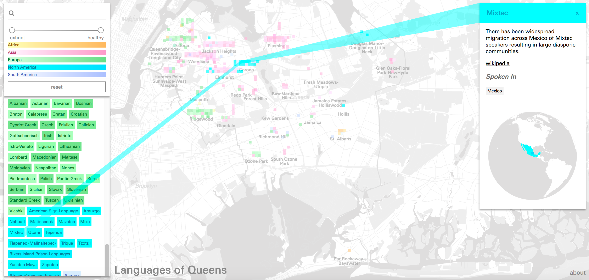
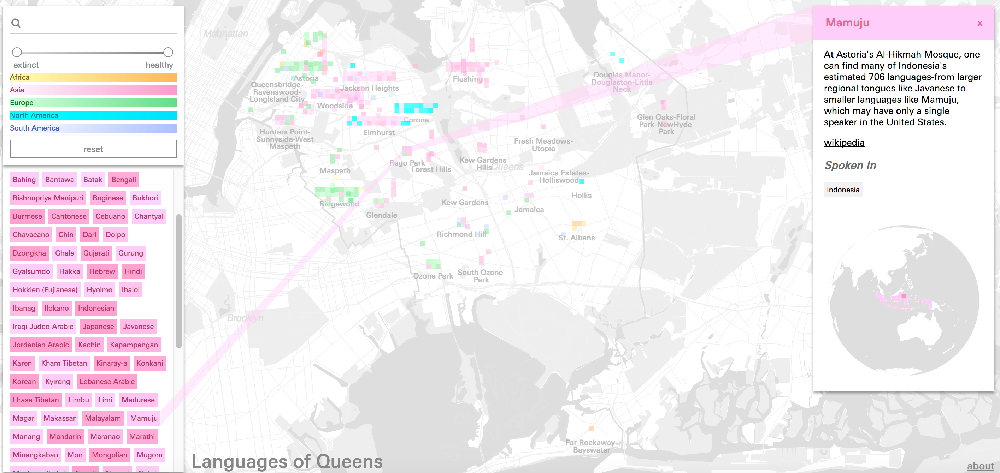

Beyond the Census:
 The ELA
The ELAAbout the ELA
The Endangered Language Alliance (ELA) is an independent non-profit based in New York City and the only organization in the world focused on the immense linguistic diversity of urban areas. Founded in 2010, ELA documents and describes underdescribed and endangered languages, educating a larger public and collaborating with communities.
Since their founding, the ELA has worked closely with a wide range of language communities in New York, making recordings and other documentation in over 70 languages. Much of the 'Beyond the Census: Languages of Queens' map is based on those collaborations, connections, and encounters — community and activist initiatives, record-a-thons, informal street surveys, and dedicated long-term projects. Other information came from proactive research by our mapping team at the ELA, who searched public records and conducted individual interviews.

About the Map and the Data
In 2015, the U.S. Census Bureau reported that 192 languages were spoken in homes across New York City. That is more than any other metropolitan area in the country. But this statistic — based on a single question, and in a survey designed by demographers with other aims — only begins to reflects the city’s true linguistic diversity. Left off the list, and almost always invisible to outsiders, are the hundreds of languages spoken by New Yorkers that are endangered, indigenous, usually unwritten, and may be without official status anywhere.
Some of New York’s lesser-known and un-census-ed languages, like Mamuju of Indonesia, may have just a single speaker in the city, while others, like Mixtec (from Mexico) or Juhuri from Azerbaijan and Daghestan, may have thousands of speakers in New York alone. Oral languages without official government backing are often dismissed inaccurately as “dialects”, but by linguistic criteria they can be as distinctive and complete as English, Spanish, or Mandarin. For many small and endangered languages, New York City is a crucial diaspora hub.

Mixtec in Queens
Based on seven years of research and collaboration with many of the city’s language groups, the Endangered Language Alliance estimates that there are as many as 600 to 800 languages spoken in the New York metropolitan area — approximately 10 percent of the global total. New York City is not only the most linguistically diverse city in the world, but probably also the most diverse in history. And given the ongoing processes of language endangerment and loss worldwide, there may never be another place like it.
In 'Beyond the Census: Languages of Queens', we find a map based on qualitative, real-life details about people and communities rather than demographics and speaker counts. What does it mean to speak or know a language — and what is a language versus a dialect? How do we account for the intense multilingualism of a city where half of all people speak a language other than English at home? Does a commuter count, a short-term resident, a tourist? How can you fix a language to a dot on a map when languages live inside speakers (and signers) who are constantly in motion? We have no hard and fast answers — our aim is to tell the story of the city’s linguistic diversity, based on our research.

Mamuju in Queens
The initial impetus came from the recently released New York City atlas Nonstop Metropolis, edited by Rebecca Solnit and Joshua Jelly-Schapiro, where a first draft of our language map of Queens, “the world’s borough”, first appeared. In conjunction with the atlas, ELA also collaborated with the Queens Museum on a series of events, including a day-long open recording session; The Garden of Forked Tongues, a giant mural created by artist Mariam Ghani; and Mother Tongues, a series of portraits of endangered language speakers by Yuri Marder.
Also focused initially on Queens, the current map was created by the Center for Spatial Research based on ELA data. A citywide map, with even more features, is in the works. Dozens of linguists, activists, architects, community members, and volunteers have contributed to the map, confirming that each language represented has at least one native speaker. In some cases, a language is just shown in a neighborhood where we know there are speakers; in others, it is represented by a specific location (a religious institution, a community center, a restaurant, or an enclave). Some languages are spoken in many different parts of the city and could be represented by many different kinds of institutions — take these simply as suggestions, confirmed sites where a given language is likely to be, at least sometimes. The languages featured are just the ones we know about, and we are always looking to learn about others — please get in touch.
Special thanks to Byambakhuu Darinchuluun of the Mongol Heritage Foundation, Jessica Holtz, Nicole Hughes, Zev Mayer, Rose Mintzer-Sweeney, Sophie Pierson, Mahira Tiwana, Aashna Brahmbhatt, Daniel Barry, and Husniya Khujamyorova. Project Team: Laura Kurgan, Michelle McSweeney, Ross Perlin, Carsten Rodin, Tola Oniyangi, Dare Brawley Written by: Ross Perlin, Enadangered Language Alliance Return to Case Studies